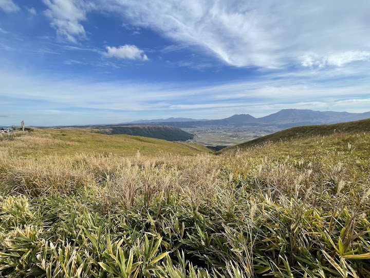
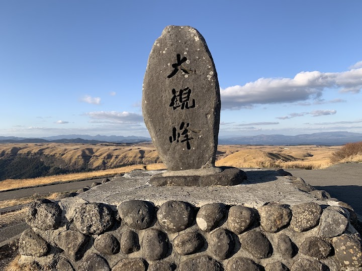
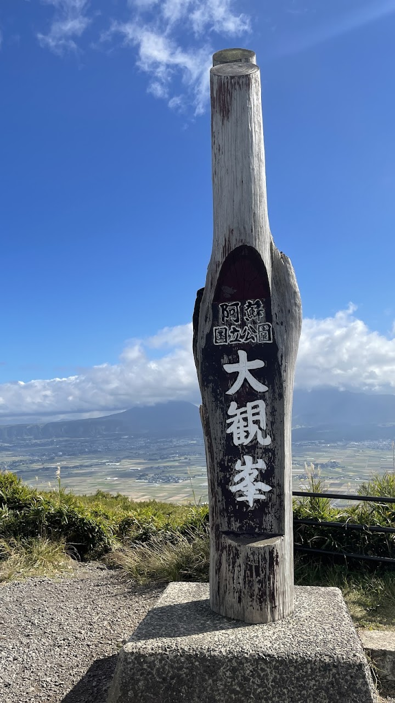
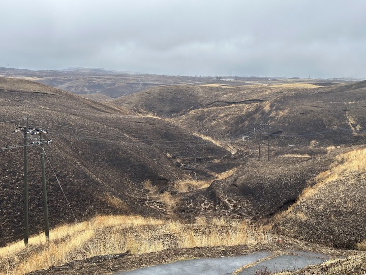
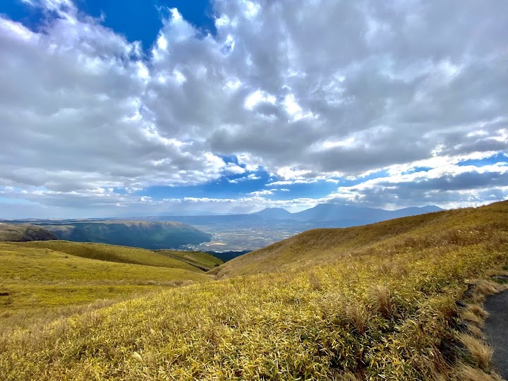

Daikanbo Lookout
Daikanbo is one of the best-known viewpoints on the rim of the Aso caldera, with a huge view over the caldera floor and its volcanoes. There are good toilets and a small cafe selling coffee and ice cream.
Open in Google Maps (street view, more photos and reviews there)






Visitor tips on finding it and getting there
Beautiful spot to add into a Kyushu road trip. View over Aso. Nice shop and cafe, friendly staff, plenty of parking.
Make it your first stop if you drive down from Fukuoka city. I call it the gate to Aso. You can enjoy the view of the candera before going west on the Milk Road, or you can drive down on the steep twisty road to Aso town. On the other hand, you can drive up here from Aso town as well, the road is good and even small car (1.2L) can manage to climb.